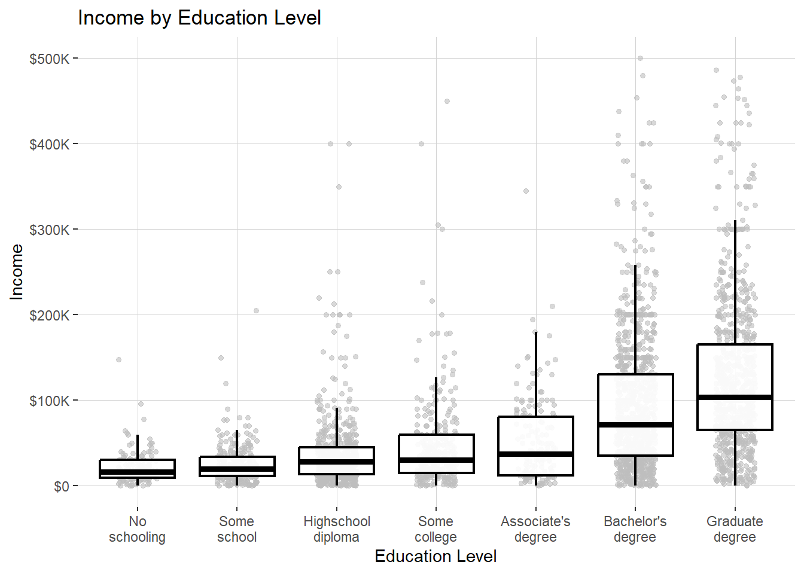
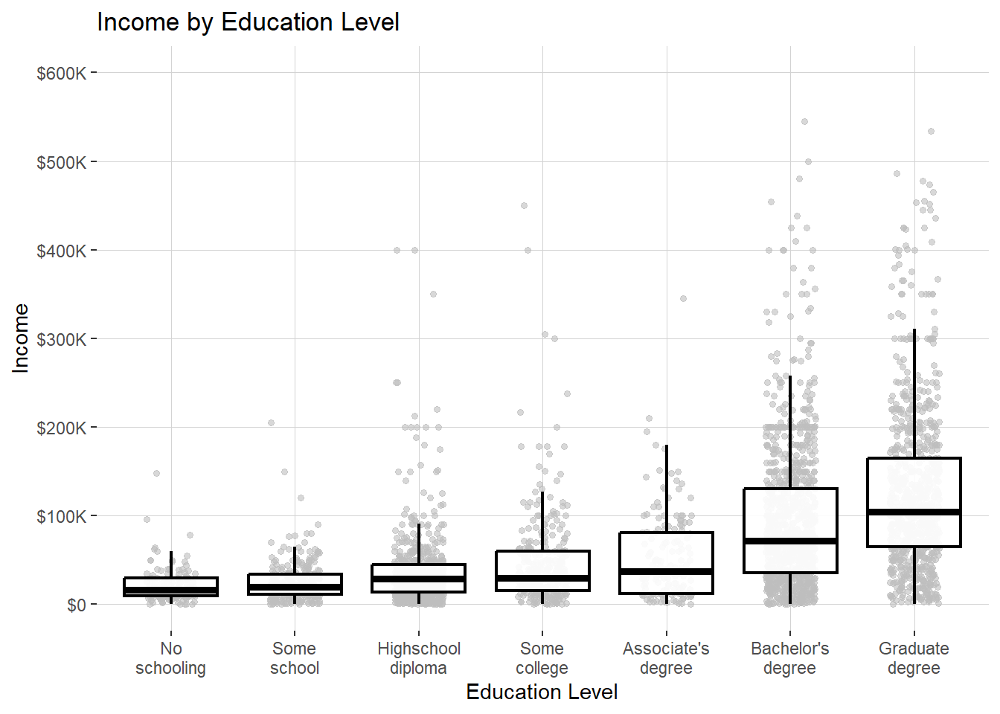

library(dplyr)
library(ggplot2)
# Statistics
library(modelsummary)
library(srvyr)
library(survey)
# Webscraping
library(httr)
library(rvest)
library(readr)
library(glue)Working with IPUMS microdata
R
Data Management
What was the median household income in Oakland, California in 2022?
Answering that question is pretty straightforward using data from the U.S. Census. If I needed to get the number quickly and wasn’t using it for analysis, I might use a web-based tool like Census Reporter to quickly look it up. However, if I were going to use the number in an analysis, I would like the retrieval to be replicable and preferably carried out via an API.
Aggregate data with tidycensus
In R, the tidycensus package provides an easy-to-use wrapper for requesting data from the Census API. Note that I set up an API key for the U.S. Census and am storing it in my .Renviron file.
library(tidycensus)
census_api_key(Sys.getenv("census_api_key"))I can query B19013_001, the median household income variable, using the 2022 1-year American Community Survey sample and filter down to Oakland’s GEOID, 0653000. I’ll throw in the total population variable for good measure:
oakland_stats <- get_acs(
geography = "place",
variables = c(
median_hh_income = "B19013_001",
total_pop = "B17001_001"
),
state = "CA",
year = 2022,
survey = "acs1"
)
oakland_stats <- oakland_stats %>% filter(GEOID == '0653000')
oakland_stats %>% select(c(variable, estimate))| variable | estimate |
|---|---|
| total_pop | 426323 |
| median_hh_income | 93146 |
Done! This is an example of retrieving aggregate census data – in this case a statistic describing the population of Oakland. This is very useful, and (Walker 2023) offers a comprehsive treatment of use cases of aggregate census data.
However, what if instead of the median, I wanted a different quantile? What if I wanted to run a regression and find the association between gender and income while adjusting for education? These statistics are not obviously available as aggregate measures in the census API. Indeed, if I want them, I would need to calculate them myself using individual-level census data, as-in, data where each row is an individual person. This is a common need and entails accessing census microdata, a complicated process that I’ll cover in this blog post. I want to note that several of the points I cover here are things I learned from some coworkers– Bert Wilden and Stephanie Peng.
Microdata via IPUMS
One of the most popular sources for downloading census microdata is the University of Minesota’s Integrated Public Use Microdata Series (IPUMS). The IPUMS team provides a centralized API for downloading census microdata, comprehensive documentation for working with census microdata, and harmonized variables across time (Walker 2023, chap. 9).
The easiest way to access IPUMS data in R with with the ipumsr package, which is managed by the IPUMs team. Here I’ll load the ipumsr library and set an API key for submitting requests.
library(ipumsr)
set_ipums_api_key(Sys.getenv("ipums_api_key"))The ipumsr website provides details on what degree of support the package has for various IPUMS products, though it’s also possible to check for support using the ipums_data_collections() function. I prefer the function so that I can see exactly what code I’ll need to plug into the API (see code_for_api). The following are the survey products that currently have API support:
ipums_data_collections() %>%
filter(api_support == TRUE) %>%
arrange(desc(collection_type))| collection_name | collection_type | code_for_api | api_support |
|---|---|---|---|
| IPUMS USA | microdata | usa | TRUE |
| IPUMS CPS | microdata | cps | TRUE |
| IPUMS International | microdata | ipumsi | TRUE |
| IPUMS ATUS | microdata | atus | TRUE |
| IPUMS AHTUS | microdata | ahtus | TRUE |
| IPUMS MTUS | microdata | mtus | TRUE |
| IPUMS NHIS | microdata | nhis | TRUE |
| IPUMS MEPS | microdata | meps | TRUE |
| IPUMS NHGIS | aggregate data | nhgis | TRUE |
For any analysis of populations in the U.S., the IPUMS USA (annual survey) and IPUMS CPS (monthly survey) collections are of particular interest. I’ll look at IPUMS USA. The IPUMS USA project collects, preserves and harmonizes U.S. census microdata and provides easy access to this data with enhanced documentation. Data includes decennial censuses from 1790 to 2010 and American Community Surveys (ACS) from 2000 to the present (Ruggles et al. 2024).
We can check out the newest products they have in the USA collection as follows:
get_sample_info(collection="usa") %>%
arrange(desc(name)) %>%
head(5)| name | description |
|---|---|
| us2022d | 2018-2022, PRCS 5-year |
| us2022c | 2018-2022, ACS 5-year |
| us2022b | 2022 PRCS |
| us2022a | 2022 ACS |
| us2021d | 2017-2021, PRCS 5-year |
Some things to note:
- PRCS refers to the Puerto Rico Community Survey
- the 5-year ACS/PRCS is a dataset that is representative of the last year in the range, but includes
An IPUMS USA example
Let’s return to the motivating question for this post: “What was the median household income in Oakland, California in 2022?”
We’ll need to get income data from the 2022 1-year ACS, and we will need to filter our data down to just the city of Oakland. For the first task, I’ll define a function, retrieve_ca_sample() that retrieves the 2022 1-year ACS for the State of California.
retrieve_ca_sample <- function(sample, variables){
extract <- define_extract_micro(
description = "CA Incomes by PUMA",
collection = "usa",
samples = c(sample),
variables = variables
)
data_path <- extract %>%
submit_extract() %>%
wait_for_extract() %>%
download_extract(download_dir = here::here("data"),
overwrite = TRUE)
data <- read_ipums_micro(data_path)
return(data)
}I’ll also define a list of variables that I want, including Income. I’ll cover exactly what each of these represent later in the post.
variables <- list(
"PUMA",
"AGE",
"SEX",
"EDUC",
"HHINCOME",
"INCTOT",
"REPWT",
"REPWTP",
var_spec("STATEFIP",
case_selections = "06")
)Finally, I’ll use the function to request the 2022 1-year ACS with these variables from IPUMS.
local_ipums_extracts <- list.files(
path = here::here('data'),
pattern = "\\.xml$",
full.names = TRUE)
if (length(local_ipums_extracts) > 0) {
existing_path <- local_ipums_extracts[1]
data <- read_ipums_micro(existing_path)
} else {
data <- retrieve_ca_sample("us2022a", variables)
}Geographies in ACS microdata
We now have microdata for all of California, but how do we filter down to just Oakland? Unfortunately, this isn’t as simple as just running filter(CITY == 'Oakland') – ACS microdata does not include a field for city (this is typically “place” in the census). Indeed, the smallest geographic area explicitly identified in the microdata is something called a public use microdata area (PUMA), a geographic area defined based on population. PUMAS are unique geographies that sometimes correspond to other small geographic areas, such as city, metro area, and county, but not always. Some cities, metro areas, and counties are not able to be identified in the microdata.
https://forum.ipums.org/t/how-can-i-pull-data-at-the-zip-code-or-city-level/5650/2
To find out if a city corresponds to a collection of PUMAs and which PUMAs those are, we use a tool called GEOCORR.

The Geocorr (geographic correspondence engine) application generates files and/or reports — called correlation lists — showing relationships between two or more geographic coverages in the United States.
For example, suppose you have county-level data for California and would like to convert that data to the ZIP code level. Geocorr can show how each county relates to the ZIP code(s) that intersect it. It can tell you, for each of those ZIP/county intersections, what the size of that intersection is and what portion of the ZIP’s total population is in that intersection. https://mcdc.missouri.edu/applications/docs/geocorr2022-help.html
PUMAs are typically completely inside of counties, but they sometimes cross them. GEO Corr allows you to “crosswalk.” If a puma crosses a county line, geocorr gives you a crosswalk with every Puma-county combo that exists. There’s an allocation factor for each Puma that shows how much it should allocated, e.g. .3, .7. You can weight it by household. You can also cross walk to places, metro areas. Puma->Place.
Here I’ll define a function, geocorr_2022() that queries GEOCORR 2022 and retrieves a .csv file establishing the relationships between geographies in California.
geocorr_2022 <- function(state, geo_1, geo_2, weight_var) {
base_url <- "https://mcdc.missouri.edu"
params <- glue(
"cgi-bin/broker?_PROGRAM=apps.geocorr2022.sas&",
"_SERVICE=MCDC_long&_debug=0&",
"state={state}&g1_={geo_1}&g2_={geo_2}&wtvar={weight_var}&",
"nozerob=1&fileout=1&filefmt=csv&lstfmt=txt&title=&",
"counties=&metros=&places=&oropt=&latitude=&longitude=&",
"distance=&kiloms=0&locname="
)
initial_url <- params %>% url_absolute(base = base_url)
initial_response <- GET(initial_url)
html_content <- content(initial_response, as = "text")
parsed_html <- read_html(html_content)
# Extract the one link
csv_url <- parsed_html %>%
html_node("a") %>%
html_attr("href") %>%
stringr::str_trim() %>%
url_absolute(base = base_url)
csv_data <- read_csv(csv_url)
return(csv_data)
}We’ll use that function to establish the relationships between California’s 2022 PUMAs and places, using individual population to weight the relationships.
csv_data <- geocorr_2022("Ca06", "puma22", "place", "pop20")With that, we can whether Oakland can be represented as a collection of PUMAs, and, if so, which PUMAs make up the city.
csv_data %>%
select(-c(state, stab, place)) %>%
filter(PlaceName == 'Oakland city, CA')| puma22 | PlaceName | PUMA22name | pop20 | afact |
|---|---|---|---|---|
| 00111 | Oakland city, CA | Alameda County (Northwest)–Oakland City (Downtown/West Oakland/North Oakland) | 106433 | 1 |
| 00112 | Oakland city, CA | Alameda County (Northwest)–Oakland City (Oakland Hills) | 106896 | 1 |
| 00113 | Oakland city, CA | Alameda County (West)–Oakland City (Elmhurst/Central/East Oakland) | 125840 | 1 |
| 00114 | Oakland city, CA | Alameda County (West)–San Leandro, Alameda, Emeryville & Piedmont Cities | 9 | 0 |
| 00123 | Oakland city, CA | Alameda County (Northwest)–Oakland City (San Antonio/Fruitvale) | 101468 | 1 |
The AFACT (allocation factor) column shows the proportion of the source area contained in the target area – this case the proportion of the PUMA population that belongs to Oakland. In this case, 100% of the populations in PUMAs 111, 112, 113, and 123 belong to Oakland, and 0% of PUMA 114. To be clear, GEOCORR believes that 9 individuals from 114 do live in Oakland, but based on the AFACT I’ll feel comfortable dropping that PUMA.1
Filtering to those PUMAs gets us the 2022 1-year ACS microdata for the City of Oakland.
oakland_pumas <- c(111, 112, 113, 123)
oak <- data %>%
filter(PUMA %in% oakland_pumas) %>%
haven::zap_labels()
oak %>% head()| YEAR | SAMPLE | SERIAL | CBSERIAL | HHWT | REPWT | CLUSTER | STATEFIP | PUMA | STRATA | GQ | HHINCOME | REPWT1 | REPWT2 | REPWT3 | REPWT4 | REPWT5 | REPWT6 | REPWT7 | REPWT8 | REPWT9 | REPWT10 | REPWT11 | REPWT12 | REPWT13 | REPWT14 | REPWT15 | REPWT16 | REPWT17 | REPWT18 | REPWT19 | REPWT20 | REPWT21 | REPWT22 | REPWT23 | REPWT24 | REPWT25 | REPWT26 | REPWT27 | REPWT28 | REPWT29 | REPWT30 | REPWT31 | REPWT32 | REPWT33 | REPWT34 | REPWT35 | REPWT36 | REPWT37 | REPWT38 | REPWT39 | REPWT40 | REPWT41 | REPWT42 | REPWT43 | REPWT44 | REPWT45 | REPWT46 | REPWT47 | REPWT48 | REPWT49 | REPWT50 | REPWT51 | REPWT52 | REPWT53 | REPWT54 | REPWT55 | REPWT56 | REPWT57 | REPWT58 | REPWT59 | REPWT60 | REPWT61 | REPWT62 | REPWT63 | REPWT64 | REPWT65 | REPWT66 | REPWT67 | REPWT68 | REPWT69 | REPWT70 | REPWT71 | REPWT72 | REPWT73 | REPWT74 | REPWT75 | REPWT76 | REPWT77 | REPWT78 | REPWT79 | REPWT80 | PERNUM | PERWT | REPWTP | FAMUNIT | RELATE | RELATED | SEX | AGE | EDUC | EDUCD | INCTOT | REPWTP1 | REPWTP2 | REPWTP3 | REPWTP4 | REPWTP5 | REPWTP6 | REPWTP7 | REPWTP8 | REPWTP9 | REPWTP10 | REPWTP11 | REPWTP12 | REPWTP13 | REPWTP14 | REPWTP15 | REPWTP16 | REPWTP17 | REPWTP18 | REPWTP19 | REPWTP20 | REPWTP21 | REPWTP22 | REPWTP23 | REPWTP24 | REPWTP25 | REPWTP26 | REPWTP27 | REPWTP28 | REPWTP29 | REPWTP30 | REPWTP31 | REPWTP32 | REPWTP33 | REPWTP34 | REPWTP35 | REPWTP36 | REPWTP37 | REPWTP38 | REPWTP39 | REPWTP40 | REPWTP41 | REPWTP42 | REPWTP43 | REPWTP44 | REPWTP45 | REPWTP46 | REPWTP47 | REPWTP48 | REPWTP49 | REPWTP50 | REPWTP51 | REPWTP52 | REPWTP53 | REPWTP54 | REPWTP55 | REPWTP56 | REPWTP57 | REPWTP58 | REPWTP59 | REPWTP60 | REPWTP61 | REPWTP62 | REPWTP63 | REPWTP64 | REPWTP65 | REPWTP66 | REPWTP67 | REPWTP68 | REPWTP69 | REPWTP70 | REPWTP71 | REPWTP72 | REPWTP73 | REPWTP74 | REPWTP75 | REPWTP76 | REPWTP77 | REPWTP78 | REPWTP79 | REPWTP80 |
|---|---|---|---|---|---|---|---|---|---|---|---|---|---|---|---|---|---|---|---|---|---|---|---|---|---|---|---|---|---|---|---|---|---|---|---|---|---|---|---|---|---|---|---|---|---|---|---|---|---|---|---|---|---|---|---|---|---|---|---|---|---|---|---|---|---|---|---|---|---|---|---|---|---|---|---|---|---|---|---|---|---|---|---|---|---|---|---|---|---|---|---|---|---|---|---|---|---|---|---|---|---|---|---|---|---|---|---|---|---|---|---|---|---|---|---|---|---|---|---|---|---|---|---|---|---|---|---|---|---|---|---|---|---|---|---|---|---|---|---|---|---|---|---|---|---|---|---|---|---|---|---|---|---|---|---|---|---|---|---|---|---|---|---|---|---|---|---|---|---|---|---|---|---|---|---|---|---|---|---|---|---|---|
| 2022 | 202201 | 74718 | 2.02201e+12 | 5 | 1 | 2.022001e+12 | 6 | 111 | 11106 | 3 | 9999999 | 5 | 4 | 5 | 4 | 5 | 5 | 5 | 2 | 6 | 5 | 5 | 3 | 5 | 2 | 2 | 5 | 4 | 4 | 4 | 5 | 4 | 4 | 5 | 5 | 4 | 5 | 5 | 2 | 2 | 2 | 5 | 4 | 5 | 3 | 3 | 4 | 5 | 5 | 4 | 3 | 5 | 5 | 4 | 5 | 5 | 5 | 4 | 2 | 5 | 4 | 4 | 4 | 5 | 2 | 3 | 4 | 5 | 5 | 4 | 5 | 5 | 4 | 5 | 5 | 4 | 5 | 5 | 2 | 2 | 3 | 3 | 4 | 4 | 2 | 2 | 5 | 4 | 4 | 5 | 4 | 1 | 5 | 1 | 1 | 13 | 1301 | 1 | 20 | 7 | 71 | 0 | 5 | 4 | 5 | 4 | 5 | 5 | 5 | 2 | 6 | 5 | 5 | 3 | 5 | 2 | 2 | 5 | 4 | 4 | 4 | 5 | 4 | 4 | 5 | 5 | 4 | 5 | 5 | 2 | 2 | 2 | 5 | 4 | 5 | 3 | 3 | 4 | 5 | 5 | 4 | 3 | 5 | 5 | 4 | 5 | 5 | 5 | 4 | 2 | 5 | 4 | 4 | 4 | 5 | 2 | 3 | 4 | 5 | 5 | 4 | 5 | 5 | 4 | 5 | 5 | 4 | 5 | 5 | 2 | 2 | 3 | 3 | 4 | 4 | 2 | 2 | 5 | 4 | 4 | 5 | 4 |
| 2022 | 202201 | 74737 | 2.02201e+12 | 56 | 1 | 2.022001e+12 | 6 | 111 | 11106 | 3 | 9999999 | 6 | 81 | 56 | 66 | 67 | 81 | 65 | 7 | 55 | 80 | 79 | 11 | 55 | 83 | 43 | 12 | 6 | 42 | 56 | 56 | 7 | 82 | 56 | 65 | 66 | 79 | 65 | 7 | 56 | 81 | 80 | 12 | 55 | 83 | 42 | 12 | 6 | 43 | 55 | 55 | 7 | 82 | 55 | 68 | 68 | 81 | 67 | 6 | 56 | 78 | 80 | 12 | 55 | 82 | 43 | 11 | 6 | 42 | 56 | 54 | 6 | 82 | 56 | 66 | 67 | 78 | 67 | 6 | 56 | 81 | 80 | 12 | 55 | 82 | 44 | 12 | 7 | 43 | 54 | 55 | 1 | 56 | 1 | 1 | 13 | 1301 | 1 | 56 | 6 | 63 | 480 | 6 | 81 | 56 | 66 | 67 | 81 | 65 | 7 | 55 | 80 | 79 | 11 | 55 | 83 | 43 | 12 | 6 | 42 | 56 | 56 | 7 | 82 | 56 | 65 | 66 | 79 | 65 | 7 | 56 | 81 | 80 | 12 | 55 | 83 | 42 | 12 | 6 | 43 | 55 | 55 | 7 | 82 | 55 | 68 | 68 | 81 | 67 | 6 | 56 | 78 | 80 | 12 | 55 | 82 | 43 | 11 | 6 | 42 | 56 | 54 | 6 | 82 | 56 | 66 | 67 | 78 | 67 | 6 | 56 | 81 | 80 | 12 | 55 | 82 | 44 | 12 | 7 | 43 | 54 | 55 |
| 2022 | 202201 | 74738 | 2.02201e+12 | 15 | 1 | 2.022001e+12 | 6 | 113 | 11306 | 4 | 9999999 | 15 | 13 | 15 | 15 | 15 | 15 | 14 | 15 | 13 | 15 | 15 | 15 | 14 | 15 | 15 | 13 | 14 | 13 | 15 | 17 | 13 | 15 | 17 | 15 | 14 | 13 | 14 | 14 | 17 | 15 | 14 | 14 | 15 | 12 | 14 | 15 | 16 | 15 | 15 | 16 | 13 | 15 | 15 | 15 | 14 | 15 | 13 | 14 | 13 | 13 | 12 | 14 | 15 | 12 | 13 | 15 | 16 | 15 | 15 | 12 | 13 | 15 | 15 | 15 | 15 | 14 | 15 | 15 | 14 | 15 | 15 | 15 | 15 | 15 | 16 | 13 | 14 | 12 | 14 | 13 | 1 | 15 | 1 | 1 | 12 | 1270 | 1 | 34 | 6 | 63 | 1200 | 15 | 13 | 15 | 15 | 15 | 15 | 14 | 15 | 13 | 15 | 15 | 15 | 14 | 15 | 15 | 13 | 14 | 13 | 15 | 17 | 13 | 15 | 17 | 15 | 14 | 13 | 14 | 14 | 17 | 15 | 14 | 14 | 15 | 12 | 14 | 15 | 16 | 15 | 15 | 16 | 13 | 15 | 15 | 15 | 14 | 15 | 13 | 14 | 13 | 13 | 12 | 14 | 15 | 12 | 13 | 15 | 16 | 15 | 15 | 12 | 13 | 15 | 15 | 15 | 15 | 14 | 15 | 15 | 14 | 15 | 15 | 15 | 15 | 15 | 16 | 13 | 14 | 12 | 14 | 13 |
| 2022 | 202201 | 75005 | 2.02201e+12 | 38 | 1 | 2.022001e+12 | 6 | 113 | 11306 | 4 | 9999999 | 36 | 38 | 36 | 37 | 35 | 36 | 38 | 39 | 33 | 39 | 37 | 37 | 37 | 37 | 37 | 36 | 37 | 35 | 39 | 37 | 37 | 34 | 36 | 37 | 38 | 35 | 36 | 35 | 39 | 35 | 36 | 34 | 38 | 37 | 36 | 38 | 36 | 36 | 36 | 36 | 35 | 36 | 39 | 36 | 36 | 37 | 37 | 37 | 38 | 35 | 33 | 38 | 36 | 34 | 36 | 37 | 35 | 37 | 37 | 36 | 35 | 39 | 37 | 39 | 37 | 38 | 38 | 36 | 37 | 37 | 37 | 35 | 37 | 37 | 35 | 37 | 35 | 37 | 37 | 37 | 1 | 38 | 1 | 1 | 12 | 1270 | 2 | 40 | 2 | 23 | 41300 | 36 | 38 | 36 | 37 | 35 | 36 | 38 | 39 | 33 | 39 | 37 | 37 | 37 | 37 | 37 | 36 | 37 | 35 | 39 | 37 | 37 | 34 | 36 | 37 | 38 | 35 | 36 | 35 | 39 | 35 | 36 | 34 | 38 | 37 | 36 | 38 | 36 | 36 | 36 | 36 | 35 | 36 | 39 | 36 | 36 | 37 | 37 | 37 | 38 | 35 | 33 | 38 | 36 | 34 | 36 | 37 | 35 | 37 | 37 | 36 | 35 | 39 | 37 | 39 | 37 | 38 | 38 | 36 | 37 | 37 | 37 | 35 | 37 | 37 | 35 | 37 | 35 | 37 | 37 | 37 |
| 2022 | 202201 | 75119 | 2.02201e+12 | 20 | 1 | 2.022001e+12 | 6 | 111 | 11106 | 3 | 9999999 | 22 | 21 | 21 | 22 | 20 | 20 | 21 | 21 | 20 | 22 | 22 | 22 | 20 | 22 | 21 | 21 | 22 | 22 | 20 | 22 | 22 | 22 | 22 | 22 | 20 | 21 | 20 | 22 | 21 | 21 | 20 | 22 | 21 | 22 | 22 | 20 | 21 | 22 | 22 | 22 | 20 | 22 | 22 | 22 | 21 | 21 | 22 | 22 | 21 | 22 | 21 | 20 | 22 | 21 | 20 | 20 | 22 | 23 | 21 | 22 | 22 | 22 | 22 | 20 | 20 | 22 | 22 | 21 | 22 | 22 | 22 | 21 | 20 | 22 | 22 | 20 | 20 | 22 | 22 | 22 | 1 | 20 | 1 | 1 | 13 | 1301 | 2 | 88 | 2 | 23 | 5800 | 22 | 21 | 21 | 22 | 20 | 20 | 21 | 21 | 20 | 22 | 22 | 22 | 20 | 22 | 21 | 21 | 22 | 22 | 20 | 22 | 22 | 22 | 22 | 22 | 20 | 21 | 20 | 22 | 21 | 21 | 20 | 22 | 21 | 22 | 22 | 20 | 21 | 22 | 22 | 22 | 20 | 22 | 22 | 22 | 21 | 21 | 22 | 22 | 21 | 22 | 21 | 20 | 22 | 21 | 20 | 20 | 22 | 23 | 21 | 22 | 22 | 22 | 22 | 20 | 20 | 22 | 22 | 21 | 22 | 22 | 22 | 21 | 20 | 22 | 22 | 20 | 20 | 22 | 22 | 22 |
| 2022 | 202201 | 75131 | 2.02201e+12 | 11 | 1 | 2.022001e+12 | 6 | 123 | 12306 | 3 | 9999999 | 12 | 0 | 8 | 20 | 8 | 0 | 1 | 14 | 14 | 1 | 16 | 11 | 13 | 20 | 8 | 14 | 0 | 8 | 13 | 12 | 11 | 15 | 8 | 1 | 10 | 13 | 17 | 15 | 12 | 19 | 1 | 12 | 0 | 1 | 8 | 1 | 16 | 8 | 12 | 10 | 11 | 1 | 9 | 21 | 7 | 0 | 1 | 13 | 14 | 1 | 16 | 10 | 13 | 18 | 10 | 13 | 1 | 9 | 14 | 11 | 10 | 13 | 9 | 1 | 9 | 15 | 17 | 15 | 13 | 19 | 0 | 14 | 0 | 1 | 9 | 1 | 16 | 9 | 11 | 9 | 1 | 11 | 1 | 1 | 13 | 1301 | 2 | 86 | 2 | 23 | 0 | 12 | 0 | 8 | 20 | 8 | 0 | 1 | 14 | 14 | 1 | 16 | 11 | 13 | 20 | 8 | 14 | 0 | 8 | 13 | 12 | 11 | 15 | 8 | 1 | 10 | 13 | 17 | 15 | 12 | 19 | 1 | 12 | 0 | 1 | 8 | 1 | 16 | 8 | 12 | 10 | 11 | 1 | 9 | 21 | 7 | 0 | 1 | 13 | 14 | 1 | 16 | 10 | 13 | 18 | 10 | 13 | 1 | 9 | 14 | 11 | 10 | 13 | 9 | 1 | 9 | 15 | 17 | 15 | 13 | 19 | 0 | 14 | 0 | 1 | 9 | 1 | 16 | 9 | 11 | 9 |
But what do these data actually represent?
Granularity in the ACS
Each row in the ACS microdata is an individual, identified by a unique combination of SERIAL, the unique identifier for their household, and PERNUM, their unique identifier within their household. Thus, we can identify units as follows:
- Households: The combination of
SAMPLEandSERIALprovides a unique identifier for every household in the IPUMS
- Individuals: The combination of
SAMPLE,SERIAL, andPERNUMprovides a unique identifier for every person in the IPUMS
Where SAMPLE defines when the inidividual was surveyed (in the 1-year ACS it’s the same for all rows) (See SERIAL in Ruggles et al. 2024).
We can group by these variable combinations and see how many individuals and rows were surveyed across PUMAs:
oak %>% group_by(PUMA) %>% summarise(
n_rows = n(),
n_individuals = n_distinct(SAMPLE, SERIAL, PERNUM),
n_households = n_distinct(SAMPLE, SERIAL)
)| PUMA | n_rows | n_individuals | n_households |
|---|---|---|---|
| 111 | 1083 | 1083 | 578 |
| 112 | 1152 | 1152 | 547 |
| 113 | 989 | 989 | 385 |
| 123 | 905 | 905 | 389 |
Let’s randomly select a family in the data and see what that looks like in practice.
Code
household_serials <- oak %>%
group_by(SERIAL) %>%
count() %>%
filter(n > 1) %>%
pull(SERIAL)
set.seed(2)
sample_household <- sample(household_serials, 1)
n <- oak %>% filter(SERIAL == sample_household) %>% dim() %>% .[1]oak %>% filter(SERIAL == sample_household) %>%
select(c(SERIAL, PERNUM, AGE, HHINCOME, INCTOT, PERWT, HHWT))| SERIAL | PERNUM | AGE | HHINCOME | INCTOT | PERWT | HHWT |
|---|---|---|---|---|---|---|
| 211975 | 1 | 31 | 27300 | 9300 | 62 | 62 |
| 211975 | 2 | 13 | 27300 | 9999999 | 60 | 62 |
| 211975 | 3 | 3 | 27300 | 9999999 | 120 | 62 |
| 211975 | 4 | 27 | 27300 | 18000 | 63 | 62 |
So here we can see that this household, with SERIAL 211975 has 4 members, each with a unique PERNUM.
We also see their individual incomes in INCTOT, which reports each respondent’s total pre-tax personal income or losses from all sources for the previous year. 9999999 is code to denote that the value is missing, which makes sense given that the missing values above correspond to children in the household (See INCTOT in Ruggles et al. 2024).
HHINCOME reports the total money income of all household members age 15+ during the previous year. The amount should equal the sum of all household members’ individual incomes, as recorded in the person-record variable INCTOT (See HHINCOME in Ruggles et al. 2024)
Sample weights in the ACS
To apply sample weights to an IPUMS file, users should follow one of the following procedures:
- For household-level analyses using the […] ACS/PRCS samples, weight the households using the HHWT variable. HHWT gives the number of households in the general population represented by each household in the sample.
- For person-level analyses using the […] ACS/PRCS samples, apply the PERWT variable. PERWT gives the population represented by each individual in the sample.
https://usa.ipums.org/usa/intro.shtml#weights
Thus, oak is our data at the individual level. Here I’ll make a oak_households dataset that is at the household level:
oak_households <- oak %>%
distinct(SAMPLE, SERIAL, .keep_all = TRUE)
households_w_income <- oak_households %>%
filter(HHINCOME != 9999999, HHINCOME >= 0)median_table <- households_w_income %>%
as_survey(weights=HHWT) %>%
summarise(weighted_median = survey_median(HHINCOME)) %>%
mutate(variable = "Median HH Income",
ipums_estimate = weighted_median,
se = weighted_median_se)
count_table <- oak %>%
as_survey(weights=PERWT) %>%
survey_count() %>%
mutate(variable = "Population",
ipums_estimate = n,
se = n_se)
bind_rows(count_table, median_table)%>%
select(c(variable, ipums_estimate))| variable | ipums_estimate |
|---|---|
| Population | 430052 |
| Median HH Income | 89000 |
But recall that our IPUMS estimates were slightly different:
oakland_stats %>% select(c(variable, estimate))| variable | estimate |
|---|---|
| total_pop | 426323 |
| median_hh_income | 93146 |
What gives?
The public use samples of the ACS and PRCS are extracted from the Census Bureau’s larger internal data files and are thus subject to additional sampling error and further data processing (such as imputation and allocation). […] individual variables, such as income and housing values, are Top coded. […] Weights included with the ACS PUMS for the household and person-level data adjust for the mixed geographic sampling rates, nonresponse adjustments, and individual sampling probabilities. Estimates from the ACS IPUMS samples may not be consistent with summary table ACS estimates due to the additional sampling error.
https://usa.ipums.org/usa/chapter2/chapter2.shtml#ACS
Estimation with Replicate Weights
Note: Look at the Walker textbook chapter on ACS microdata!!!
1 year is higher variance, but less bias because we are just taking stuff from that year. time series with the 1 year acs.
Replicate weights are a way of estimating the uncertainty around each weighted observation. They estimate the uncertainty of the weights?
replicate weights take into account the uncertainty around the household/person weights.
Bert uses the replicate weights to estimate the eligible population for benefits.
Why is it cooler to get microdata?
survey and srvyr – if you do any sort of summing, it will know to use the weights and use the replicate weights.
individuals_w_income <- oak %>%
# Find adult earners
filter(INCTOT != 9999999, INCTOT > 0, AGE >= 18) %>%
mutate(
# Label sex
SEX = case_when(SEX == 1 ~ 'Male', TRUE ~ 'Female'),
# Label education
educ_attain = case_when(
EDUC == 10 ~ "Bachelor's degree",
EDUC == 11 ~ "Graduate degree",
EDUCD %in% c(63, 65, 64) ~ "Highschool diploma",
EDUCD == 71 ~ "Some college",
EDUC == 8 ~ "Associate's degree",
EDUC == 0 ~ "No schooling",
EDUCD == 61 ~ "Some school",
EDUC < 6 ~ "Some school",
) %>% as.factor()
)https://www.andrewheiss.com/blog/2022/06/23/long-labels-ggplot/index.html
# Define colors and order as in your original code
colors <- RColorBrewer::brewer.pal(n=5, "Set1")[4]
order <- individuals_w_income %>%
distinct(EDUC, educ_attain) %>%
arrange(EDUC) %>%
distinct(educ_attain) %>%
pull()
# # Calculate the mean income for each education level
# mean_income <- individuals_w_income %>%
# group_by(educ_attain) %>%
# summarize(mean_INCTOT = weighted.mean(INCTOT, w = PERWT)) %>%
# mutate(educ_attain = factor(educ_attain, levels = order))
# Plot with jitter and mean points
ggplot(individuals_w_income, aes(x = factor(educ_attain, levels = order), y = INCTOT, weight = PERWT)) +
geom_jitter(position = position_jitter(width=.2), alpha = 0.6, color = "grey", size=1.2) +
geom_boxplot(alpha = 0.9, color = "black", size=.9, outliers = FALSE, linewidth=.8) +
scale_y_continuous(labels = scales::label_currency(scale_cut = scales::cut_short_scale()),
limits = c(0, 500000),
breaks = seq(0, 500000, 100000)) +
scale_x_discrete(labels = scales::label_wrap(10)) +
labs(title = "Income by Education Level",
y = "Income",
x = "Education Level") +
theme(panel.grid.minor = element_blank(),
panel.grid = element_line(color = "lightgrey",
size = .2,
linetype = 1),
panel.background = element_rect("white"))
Code
gof_stuff <- tribble(
~raw, ~clean, ~fmt,
"nobs", "N", 0,
"r.squared", "R²", 3
)model_ols1 <- lm(log(INCTOT) ~ factor(SEX),
data = individuals_w_income, weights = individuals_w_income$PERWT)
model_ols2 <- lm(log(INCTOT) ~ factor(SEX) + AGE + I(AGE^2),
data = individuals_w_income, weights = individuals_w_income$PERWT)
model_ols3 <- lm(log(INCTOT) ~ factor(SEX) + AGE + I(AGE^2) + relevel(educ_attain, ref="Highschool diploma"),
data = individuals_w_income, weights = individuals_w_income$PERWT)
modelsummary(list(model_ols1, model_ols2, model_ols3),
gof_map = gof_stuff, exponentiate = TRUE)| (1) | (2) | (3) | |
|---|---|---|---|
| (Intercept) | 37064.571 | 6006.148 | 3805.220 |
| (1229.397) | (1044.872) | (584.301) | |
| factor(SEX)Male | 1.251 | 1.214 | 1.378 |
| (0.058) | (0.055) | (0.054) | |
| AGE | 1.089 | 1.074 | |
| (0.008) | (0.007) | ||
| I(AGE^2) | 0.999 | 0.999 | |
| (0.000) | (0.000) | ||
| relevel(educ_attain, ref = "Highschool diploma")Associate's degree | 1.466 | ||
| (0.139) | |||
| relevel(educ_attain, ref = "Highschool diploma")Bachelor's degree | 2.880 | ||
| (0.161) | |||
| relevel(educ_attain, ref = "Highschool diploma")Graduate degree | 4.377 | ||
| (0.256) | |||
| relevel(educ_attain, ref = "Highschool diploma")No schooling | 0.743 | ||
| (0.081) | |||
| relevel(educ_attain, ref = "Highschool diploma")Some college | 1.171 | ||
| (0.086) | |||
| relevel(educ_attain, ref = "Highschool diploma")Some school | 0.774 | ||
| (0.060) | |||
| N | 3131 | 3131 | 3131 |
| R² | 0.007 | 0.058 | 0.308 |
Code
colors <- RColorBrewer::brewer.pal(n=5, "Set1")[c(5, 2)]
order <- individuals_w_income %>% distinct(EDUC, educ_attain) %>% arrange(desc(EDUC)) %>% distinct(educ_attain) %>% pull()
ggplot(individuals_w_income, aes(y = factor(educ_attain, level=order), color = factor(SEX), fill = factor(SEX), weight = PERWT)) +
geom_bar(position = "dodge", boundary = 0, alpha = 0.9, aes(x = (..count..)/sum(..count..))) +
scale_color_manual(values = colors) +
scale_fill_manual(values = colors) +
scale_x_continuous(labels = scales::label_percent(), ) +
labs(title = "Distribution of Highest Education Level by Sex",
x = "Percent of earners",
y = "Education",
color = "Sex",
fill = "Sex") +
theme(panel.grid.minor = element_blank(),
panel.grid = element_line(color="lightgrey",
size=.2,
linetype = 1),
panel.background = element_rect("white")
)
References
Ruggles, Steven, Sarah Flood, Matthew Sobek, Daniel Backman, Annie Chen, Grace Cooper, Stephanie Richards, Renae Rogers, and Megan Schouweiler. 2024. “IPUMS USA: Version 15.0.” Minneapolis, MN: IPUMS. https://doi.org/10.18128/D010.V15.0.
Walker, Kyle. 2023. Analyzing US Census Data. 1st edition. Boca Raton: Chapman; Hall/CRC.
Footnotes
Were the AFACT higher, e.g. 1%, I would randomly sample 1% of the individuals from that PUMA and include them in my Oakland sample.↩︎